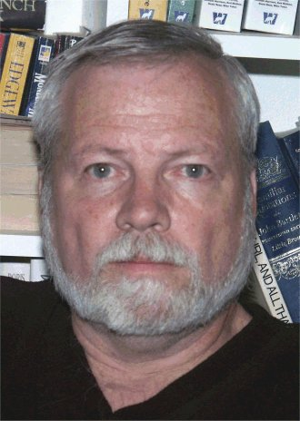

John Kennedy's SMC Home Page

"All knowledge resides in 0 and
1!"
Downloadable Software
Downloadable Papers
Class Downloads
Sabbatical Fall 2003 Downloads
Published Textbooks
Contact Information:
John Kennedy
Mathematics Department
Santa Monica College
1900 Pico Blvd.
Santa Monica, CA 90405
Voice Mail: (310) 434-4721 (24 hrs.)
e-mail: rkennedy@ix.netcom.com
home page: http://homepage.smc.edu/kennedy_john
On campus telephone extension: 4721
Short Biography:
John Kennedy was born in Plymouth, Indiana in 1948. When he was 7 years old his family moved to Hammond, Indiana where John attended school from 3rd grade through his junior year in high school. (HHS is still the Best!) In the summer of 1965 John moved to San Jose, California where he graduated from Lincoln High in 1966. John then attended UC Santa Barbara from 1966-1970 where he earned a B.A. degree in Mathematics. John was accepted to start graduate work in Mathematics at UCLA in the next year, but his draft board had other ideas. While waiting for a decision, during 1970-1971, John earned a Secondary Teaching credential from UCSB. He was then drafted for the Vietnam War, but instead, served as a Conscientious Objector between 1971-1973. From 1973-1975 John attended UCLA where he earned an M.A. degree in Mathematics. John then began teaching math at Santa Monica College in 1975. John is a co-author of two math textbooks used at SMC. He is an avid computer programmer as evidenced by the programs and papers available in the above download links. He is also an independent consultant and software developer specializing in small database and imaging applications for private companies.